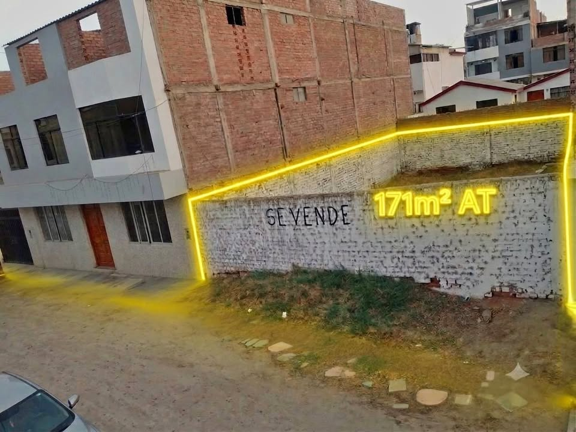

PEN200 171 m²

¡Terreno ideal para tu proyecto en Urb. Santa Edelmira! 🏗️✨ Ubicación estratégica y alta rentabilidad en uno de los sectores más cotizados de Víctor Larco. Características del inmueble: * Área Total: 171 m² (9 m de frente × 19 m de fondo) * Ubicación privilegiada: Frente a un tranquilo parque/óvalo interior en calle residencial, rodeado de edificios multifamiliares. * Cerca de todo: A pasos de la Av. Larco, Parque de las Aguas, UCV y Tiendas SOLCO. * Potencial: Perfecto para desarrollos inmobiliarios o residencia familiar. Inversión: $200,000 USD (negociable) 📲 ¡No dejes pasar esta oport